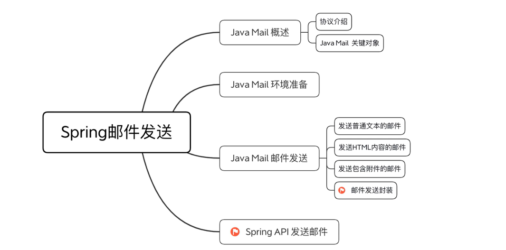

1、主要内容

2、JavaMail概述

2.1、协议介绍
2.1.1、SMTP

2.1.2、POP

2.1.3、IMAP

2.1.4、MIME

2.2、JavaMail的关键对象
2.2.1、Properties属性对象


2.2.2、Session会话对象

2.2.3、Transport和Store传输和存储

2.2.4、Message 消息对象

2.2.5、Address地址

2.2.6、Authenticator认证者

3、Java Mail环境准备
3.1、设置邮箱服务
1、登录邮箱
2、添加服务

3.2、添加依赖

4、Java Main发送邮件
4.1、发送普通文本邮件


/*
发送普通文本邮件
使用javaMail发送邮件的步骤：
1、创建Session对象，加载Properties对象
2、通过Session对象得到transport对象
3、使用邮箱的用户名和密码连接邮件服务器
4、设置 Message邮件对象
5、发送邮件
public class MailTest01{
public static void main(String[] args){
//设置邮箱服务器的相关配置
Properties properties=new Properties();
//设置邮箱服务器的主机名
properties.setProperty("mail.smtp.host","smtp.139.com");
//设置邮箱服务器的端口
properties.setProperty("mail.smtp.port","25");
//设置邮箱服务器是否需要身份认证(设置为ture说明需要身份认证)
properties.setProperty("mail.smtp.auth","true");
// 使用JavaMail发送邮件
//1、 创建Session对象，加载Properties对象
Session session=Session.getInstance(properties);
//开启Session的debug模式（非强制）
session.setDebug(true);
//2、通过Session对象得到transport对象
Transport transport=session.getTransport();
//3、使用邮箱的用户名和密码连接邮箱服务器
//用户名是：@符号前面的内容；密码：授权码
transport.connect("smtp.139.com","mail_test01","授权码");
//4、设置Message邮件对象
Message message=createSimpleMail(session);
//5、发送邮件
transport.sendMessage(message,message.getAllRecipients());
//6、关闭transport对象
transport.close();
}
private static Message createSimpleMail(Session session){
//创建邮件对象
MimeMessage message=new MimeMessage(session);
//设置邮件的发送人
message.setFrom("mail_test01@139.com");
//设置邮件的接收人(此处的发件人和收件人是同一个账户，邮箱也是一样的)
message.setRecipient(Message.RecipientType.TO,new InternetAddress("mail_test01@139.com"));
//设置邮件的主题
message.setSubject("测试文本文件");
//设置发送日期（默认是当前 时间）
message.setSentDate(new Date());
//设置邮件的文本内容
message.setText("你好，这是一封测试文本的邮件");
//返回封装好的邮件对象
return message;
}
}
*/